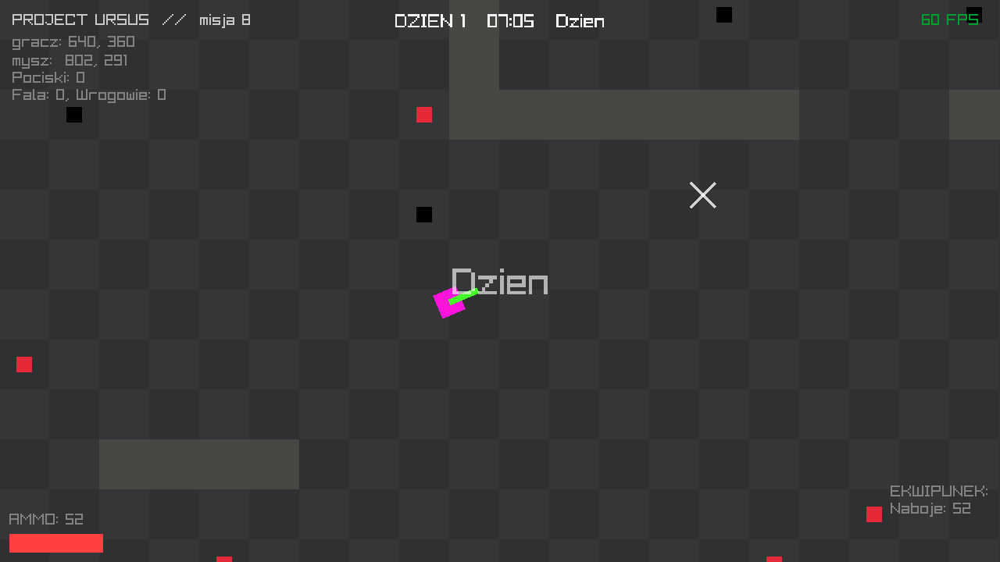
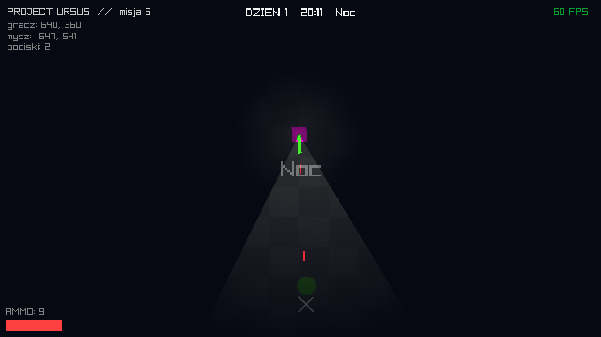
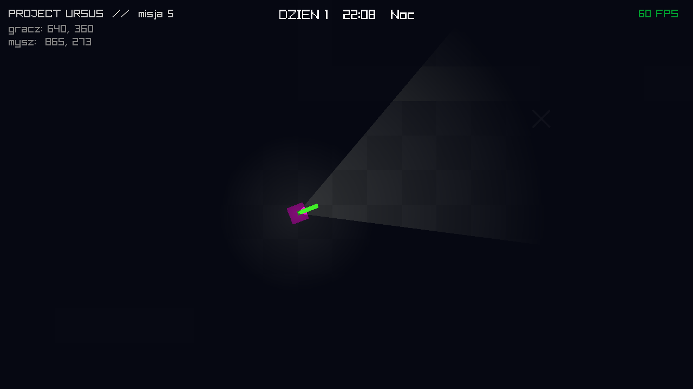
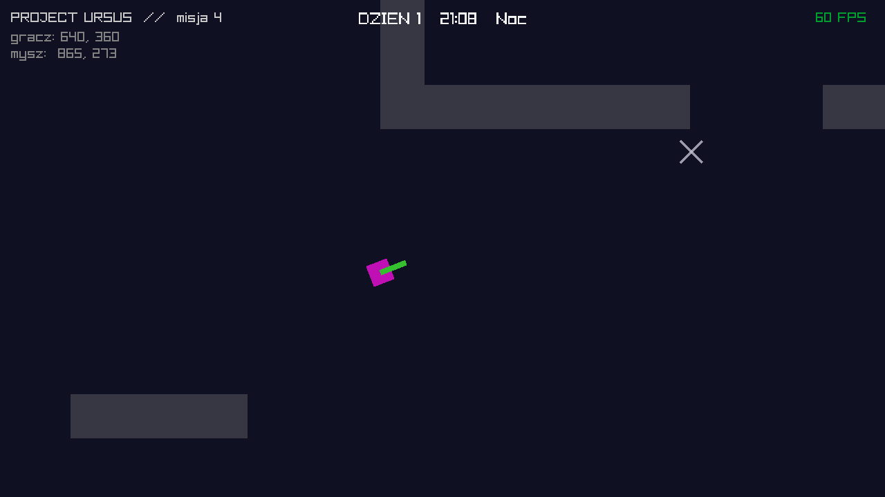
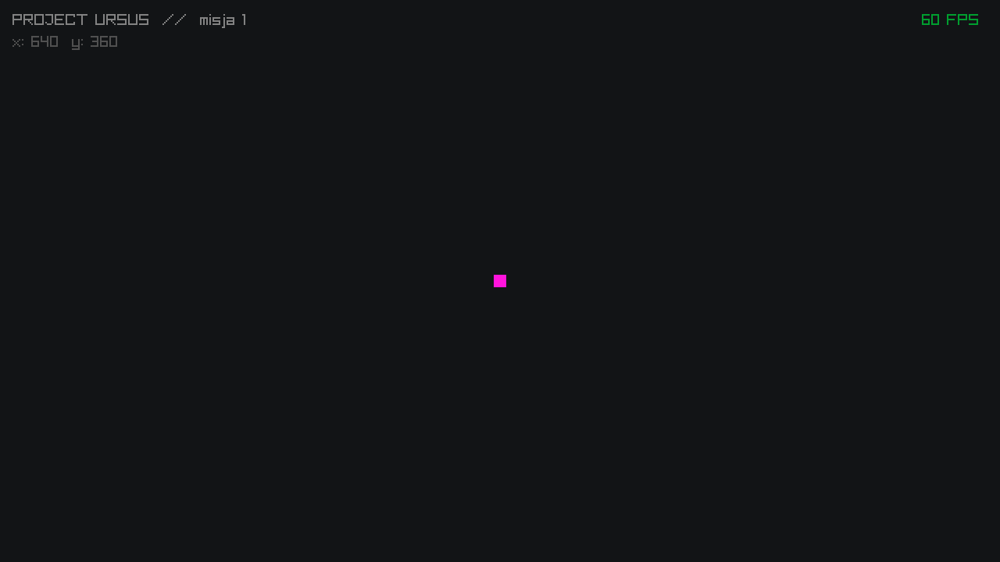

Projekt 005 · w trakcie
Project Ursus
Survival z widokiem z góry. W dzień zbierasz, w nocy się bronisz. Zakład przemysłowy w średnim polskim mieście, jakiś czas po katastrofie: płot, hala, portiernia i coś, co przychodzi po zmroku przez bramę.
Piszę go od zera w C++, żeby nauczyć się języka na czymś, co widać. Każda misja kończy się zrzutem ekranu, a poniżej są wszystkie po kolei.
C++23raylib 6CMakeGCC 16CLion
Postęp do MVP
9 / 10 misji
Cel MVP
przetrwać jedną noc
Od najnowszego wpisu. Zrzuty z misji 1–5 zrobiłem później: gra zbudowana z kodu z commita z tamtego dnia, uruchomiona bez okna, zapisana jedna klatka. Wszystko na nich to kod z tamtego etapu.
10w trakcie
Barykady
Prawy przycisk stawia barykadę ze złomu na kaflu pod kursorem. Wrogowie muszą ją rozbić, zanim przejdą, a licznik przeżytych nocy to wynik. Z tym gra staje się grą.
092.11.2026
Złom

Dzień przestał być pusty. Gra zaczyna się o świcie, a o 7:00 po zakładzie leżą rzeczy: naboje (zielone), złom (czarny), apteczki (czerwone). Spacja przy przedmiocie wkłada go do ekwipunku w prawym dolnym rogu, H leczy apteczką. Naboje trafiły do ekwipunku razem z resztą.
C++własny moduł losowanie (generator schowany jako static), enum class z using enum w switch, do-while, std::map<PrzedmiotRodzaj, int>, structured bindings w HUD-zie
Pułapkicztery błędy naraz w tworzeniu przedmiotu (brak const, przecinek zamiast wywołania, kafle pomylone z pikselami, rysowanie za ostatnim break); std::format przyjmuje tylko wzór znany w czasie kompilacji
082.11.2026
Fale

Noc ma rytm. Co 25 sekund przez bramę wchodzi fala, każda o jednego wroga większa, a każda kolejna noc zaczyna od większej. Wrogowie idą gęsiego, każdy trochę innym tempem, a co dziesiąty wchodzi dziurą w płocie w rogu mapy. Nie nachodzą na siebie, tylko się rozpychają. Trafiony na chwilę czerwienieje.
Pierwsza misja bez szkieletu: pliki, strukturę fal i funkcje zaprojektowałem sam.
C++std::vector<Wrog> zamiast optional, <random> (mt19937, rozkład jednostajny), pętla po parach i, j = i + 1
Pułapkireferencja jako pole struktury blokuje przypisanie (use of deleted function operator=); parametr bez & przesuwał kopię wektora; dzień zmienia się o północy, w środku nocy
072.11.2026
Walka

Wreszcie można się bronić. Lewy przycisk strzela tam, gdzie celujesz, a czerwone smugi świecą nawet w ciemności. Pociski rozbijają się o ściany, trzy trafienia kładą wroga. 12 naboi na całe życie.
Cała misja bez podpowiedzi, w dwóch commitach.
C++std::vector i push_back, pętla zakresowa z & i const&, pierwsza lambda w std::erase_if
061–2.11.2026
Wróg

O 20:00 przez bramę wchodzi coś zielonego i idzie prosto na gracza. Widać je tylko w świetle. Dotknięcie zabiera HP, po chwili nietykalności można oberwać znowu. Po śmierci świat staje, R zaczyna od nowa.
C++std::optional, refaktoryzacja (jeden kod ruchu dla gracza i wroga), kolizja koło–koło
Pułapkizmienna bez wartości początkowej to śmieci, nie zero; * zamiast + w sumie promieni, więc wróg ranił z 80 px
051.11.2026
Latarka

Tu zaczyna się klimat. Noc jest prawie czarna, widać tylko stożek latarki i słabą poświatę wokół gracza. F włącza i wyłącza latarkę.
Grafikarender do tekstury jako maska ciemności, mieszanie kolorów MIN, wachlarz z trójkątów
Pułapkaodwrócona maska, bo OpenGL liczy y od dołu
0431.10.2026
Dzień i noc

Zegar: 10 sekund to godzina. Świt, dzień, zmierzch, noc: ekran płynnie ciemnieje, a nazwa pory pojawia się na środku i gaśnie.
C++switch po enum class, std::format
Pułapkijednostki (dt dzielone przez sekundy na godzinę, nie mnożone); float != 0, które nigdy nie trafia w zero
0331.10.2026
Kamera i celowanie

Kamera idzie za graczem i wysuwa się o 25% w stronę kursora. Gracz obraca się za myszką, zielona kreska to lufa.
C++wektory, atan2, std::numbers::pi, std::clamp
0230.10.2026
Mapa i ściany
Zakład z kafelków: płot, hala, portiernia (widać je na zrzucie z misji 3). Przez ściany nie da się przejść, a wzdłuż nich gracz się ślizga, bo ruch jest sprawdzany osobno w x i w y.
C++enum class, mapa 2D w jednym std::vector (indeks y * szerokosc + x)
0130.10.2026
Gracz chodzi

Okno, ciemne tło, różowy kwadrat na WASD. Po skosie nie jest szybszy, bo kierunek jest normalizowany. Od tego się zaczęło.
C++pętla gry, deltaTime, pierwsza struct